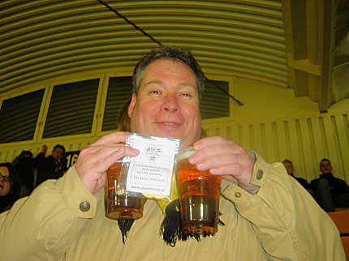
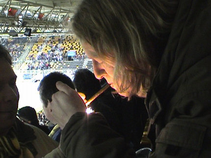
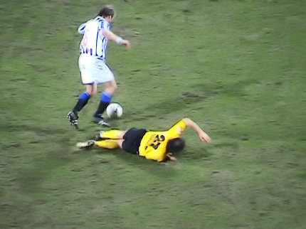
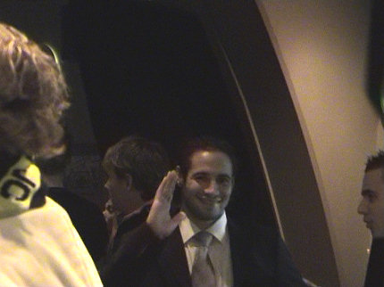

|
Roda JC - SC Heerenveen (2-1) 18 februari 2006
|

Het FP kwam met een verlate Valentijns-actie....
Duizenden hartjes vlogen door de lucht.
De nummer 4 van Nederland met 100 supporters.
De onvermijdelijke carnavalsprins wint de toss en mag aftrappen. Zijn
doelpoging bereikt nauwelijks Heerenveenkeeper Vandenbussche.
Een nieuw spandoek op west.

De wedstrijd is amper 10 minuten bezig als deze gast een feestsigaar
meent te moeten ontsteken.
Enkele minuten later belandt een schot van Sergio op de paal.
De uitbraak van Heerenveen met een afstandsschot van Bruggink.
Kujovic blundert en zo is het 0-1, (17').
Bosvelt helpt Cziommer opkrabbelen.
Nilsson krijgt een tik op zijn kuiten. Wiedemeijer ziet het en trekt de gele
kaart voor Senden.
In de kwaliteitsarme eerste helft gebeurt er zelden iets opwindends. Hier is
het echter spannend wanneer Kah de bal aan zijn man verspeelt waardoor
de van rechts aanstormende Heerenveener een kanonskogel kan lanceren
die deze keer prima gestopt wordt door Kujovic.
Kah gaat Nilsson vertellen dat hij zich niet zo aan moet stellen.
Wiedemeijer snelt toe om Kah tot kalmte te manen.
Bube was de eerste die dit geheimschrift kon ontcijferen.
Kun jij het ook?
In de tweede helft loopt Roda op Duracell-batterijen en gebeurt er vanalles.
Hier wordt Senden binnen de zestien gevloerd door Bruggink.
Geel voor Bruggink en een penalty voor Roda JC.
Captain Gregoor van Dijk mediteert met de bal alvorens aan te leggen voor
de strafschop.
De bal gaat strak de linkerhoek binnen: 1-1, (53').

Bosvelt mag door na een overtreding op Bodor.
Even later gaat hij toch nog op de bon.
Een overtreding op Van Dijk levert een vrije trap op die genomen wordt door
Cziommer.
De bal verdwijnt prachtig in de kruising: 2-1, (66').
Amper tien minuten later ontstaat er een ondoorzichtig dispuut. Op advies
van de grensrechter trekt Wiedemeijer de rode kaart voor zowel Kah als
voor Nilsson.
In de slotfase zijn er nog diverse goede kansen voor Oper en Cissé. Oper
die na buitenspel iets te lang de bal heeft gespeeld na het fluitsignaal van
de scheidsrechter krijgt de gele kaart.
In de slotfase met liefst 5 minuten extra tijd is het hier nog één keer goed
schrikken.
Na Leemans voor Sergio en Cristiano voor Oper komt een oude bekende
het veld in: Humphrey Rudge vervangt Ger Senden.
De sjaaltjes gaan massaal de lucht in op west.
Humphrey dolblij na zijn korte maar succesvolle invalbeurt.
Iedereen blij eigenlijk.
Terwijl de persconferentie loopt kan dit maedje nog steeds niet geloven dat
de drie punten binnen zijn.
Huiskamervraag 2: Van welke club is deze bezoeker een fan?

Er kwamen vijf (!) spelers naar het home zoals hier Van Dijk en Colinet.

Bodor was er ook net als Rudge en Cristiano.
Het was nog lang gezellig.
© Koempels Pleasure Dome
|